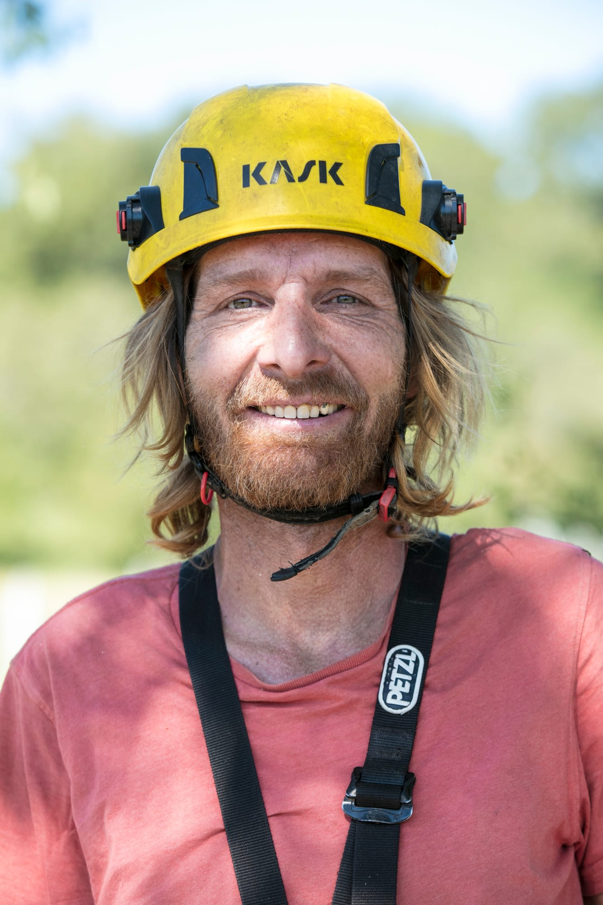

Bendik Häusermann
In einer Familie von Blumenhändlern geboren, hatte er immer die Leidenschaft für die Pflanzenwelt inne. Sich in der Welt der Pflanzen zu bewegen, deren Wachstumsrhythmus zu verstehen und zu lernen, sie zum Strahlen zu bringen, gehört zu seiner familiären und persönlichen Geschichte.
Als Absolvent der Lullier-Schule und seit mehreren Jahren erfahrener Profi hat er eine reiche praktische Erfahrung in der Arboristik und dem erstklassigen Landschaftsbau gesammelt, bevor er sein eigenes Unternehmen Arbres Services Genève gründete.
Polyglott und zutiefst darauf bedacht, jedem Gesprächspartner zuzuhören, untersucht Bendik vor Ort Ihre technischen und botanischen Anforderungen, um Ihnen mit Sorgfalt die am besten geeignete Lösung für Ihre Bedürfnisse und Ihr Budget vorzuschlagen und umzusetzen.